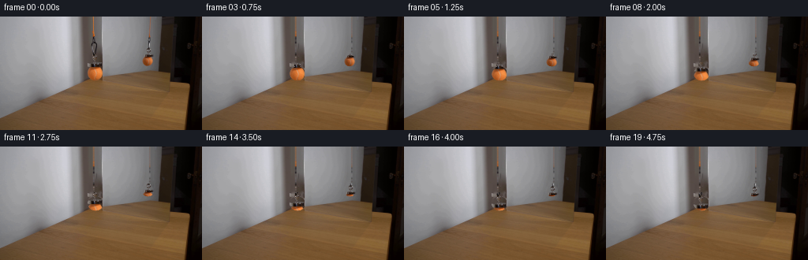
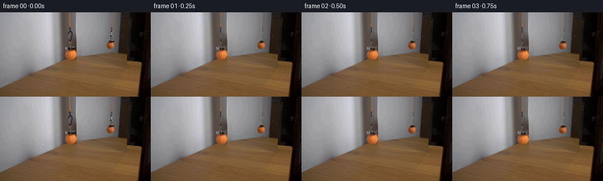
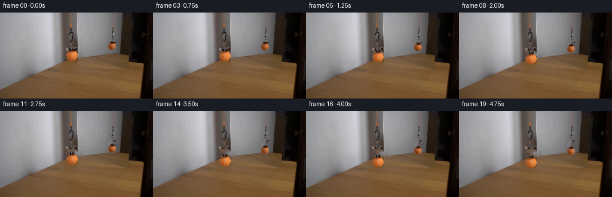
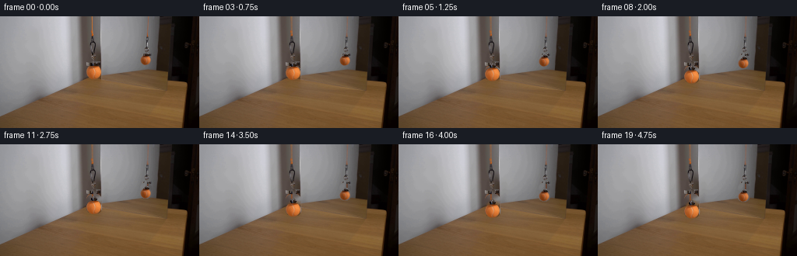

CODING AGENTS AS PIXEL WORLD MODELS
traex/DeepSeek-V4.1-Flash · 0115
点击播放 · 原生 RGB 像素
逐轮保存的候选
回放视频、检查图与代码变化。
每份候选均可单独播放。实际图片检查记录在下方工具轨迹中。
候选 01播放与检查图
点击播放 · 原生 RGB 像素


展开代码变化
--- 上一保存版本
+++ 本次保存版本
@@ -0,0 +1,165 @@
+from pathlib import Path
+
+import cv2
+import numpy as np
+from PIL import Image
+
+import artifact_io
+
+
+CASE_DIR = Path(__file__).resolve().parent
+FRAME_COUNT = 20
+HEIGHT = 144
+WIDTH = 256
+
+
+def ellipse_mask(shape, center, radii, feather=0.08):
+ yy, xx = np.indices(shape, dtype=np.float32)
+ cx, cy = center
+ rx, ry = radii
+ radius = np.sqrt(((xx - cx) / rx) ** 2 + ((yy - cy) / ry) ** 2)
+ return np.clip((1.0 + feather - radius) / feather, 0.0, 1.0).astype(np.float32)
+
+
+def make_object_alpha(shape, center, radii, magnet_center, magnet_radii):
+ alpha = ellipse_mask(shape, center, radii, feather=0.07)
+ if magnet_center is not None:
+ magnet = ellipse_mask(shape, magnet_center, magnet_radii, feather=0.10)
+ alpha = np.maximum(alpha, magnet)
+ return alpha
+
+
+def shifted_sample(image, dx, dy):
+ height, width = image.shape[:2]
+ yy, xx = np.indices((height, width), dtype=np.float32)
+ map_x = xx - np.float32(dx)
+ map_y = yy - np.float32(dy)
+ return cv2.remap(
+ image,
+ map_x,
+ map_y,
+ interpolation=cv2.INTER_CUBIC,
+ borderMode=cv2.BORDER_REFLECT_101,
+ )
+
+
+def composite(base, sprite, alpha):
+ out = base.astype(np.float32)
+ rgb = sprite.astype(np.float32)
+ a = alpha[:, :, None]
+ out = out * (1.0 - a) + rgb * a
+ return np.clip(out, 0.0, 255.0).astype(np.uint8)
+
+
+def draw_cord(frame, x_center, y_bottom, colors, width=1.55, reflection=False):
+ """Draw an anti-aliased, lightly textured vertical suspension cord."""
+ height, width_px = frame.shape[:2]
+ y_end = int(np.ceil(y_bottom))
+ if y_end <= 0:
+ return frame
+
+ yy, xx = np.indices((height, width_px), dtype=np.float32)
+ bend = 0.10 * np.sin(np.linspace(0.0, 3.1, height, dtype=np.float32))
+ center = x_center + bend
+ distance = np.abs(xx - center[:, None])
+ coverage = np.clip(width * 0.55 + 0.5 - distance, 0.0, 1.0)
+ vertical = np.clip(y_bottom - yy + 0.55, 0.0, 1.0)
+ alpha = coverage * vertical
+
+ if reflection:
+ alpha *= 0.82
+
+ # Reuse the cord's sampled palette with small row-wise variation.
+ texture = colors[np.clip(np.arange(height), 0, len(colors) - 1)].astype(np.float32)
+ phase = np.arange(height, dtype=np.float32)
+ texture[:, 0] += 3.0 * np.sin(phase * 1.73)
+ texture[:, 1] += 2.0 * np.sin(phase * 1.27 + 0.8)
+ texture[:, 2] += 1.5 * np.sin(phase * 1.91 + 1.6)
+ cord_rgb = np.broadcast_to(texture[:, None, :], frame.shape).copy()
+ a = alpha[:, :, None]
+ out = frame.astype(np.float32) * (1.0 - a) + cord_rgb * a
+ return np.clip(out, 0.0, 255.0).astype(np.uint8)
+
+
+def main():
+ original = np.asarray(Image.open(CASE_DIR / "first_frame.png").convert("RGB"), dtype=np.uint8)
+ assert original.shape == (HEIGHT, WIDTH, 3)
+
+ # Main ball and the small magnet at its top.
+ real_center = (120.6, 71.9)
+ real_radii = (9.7, 8.7)
+ real_magnet = (120.4, 60.8)
+ real_magnet_radii = (3.8, 3.1)
+
+ # Its mirror image is smaller and higher in the frame.
+ mirror_center = (187.0, 55.7)
+ mirror_radii = (7.5, 7.0)
+ mirror_magnet = (188.0, 48.7)
+ mirror_magnet_radii = (2.8, 2.4)
+
+ real_alpha = make_object_alpha(
+ original.shape[:2], real_center, real_radii, real_magnet, real_magnet_radii
+ )
+ mirror_alpha = make_object_alpha(
+ original.shape[:2], mirror_center, mirror_radii, mirror_magnet, mirror_magnet_radii
+ )
+
+ # Remove the two hanging assemblies from the plate used by later frames.
+ erase = np.zeros((HEIGHT, WIDTH), dtype=np.uint8)
+ erase[real_alpha > 0.02] = 255
+ erase[mirror_alpha > 0.02] = 255
+
+ # The cords are thin but colored, so include a small measured band around each.
+ erase[0:66, 115:122] = 255
+ erase[0:51, 186:193] = 255
+ erase[56:65, 114:128] = 255
+ erase[44:51, 183:194] = 255
+
+ erase = cv2.dilate(erase, np.ones((3, 3), dtype=np.uint8), iterations=1)
+ inpainted = cv2.inpaint(original, erase, 3.2, cv2.INPAINT_TELEA)
+ blend = cv2.GaussianBlur(erase.astype(np.float32) / 255.0, (5, 5), 0.85)
+ plate = composite(original, inpainted, blend)
+
+ # Preserve the original cord's color and subtle vertical shading.
+ real_cord_colors = original[0:66, 117:120].mean(axis=1)
+ mirror_cord_colors = original[0:52, 188:192].mean(axis=1)
+
+ frames = np.empty((FRAME_COUNT, HEIGHT, WIDTH, 3), dtype=np.uint8)
+ frames[0] = original
+
+ total_real_drop = 14.5
+ total_mirror_drop = 11.2
+
+ for index in range(1, FRAME_COUNT):
+ t = index / (FRAME_COUNT - 1)
+ eased = t * t * (3.0 - 2.0 * t)
+ real_dy = total_real_drop * eased
+ mirror_dy = total_mirror_drop * eased
+
+ frame = plate.copy()
+
+ # The cords remain anchored above the frame and lengthen as the objects descend.
+ real_cord_bottom = real_magnet[1] - real_magnet_radii[1] + real_dy
+ mirror_cord_bottom = mirror_magnet[1] - mirror_magnet_radii[1] + mirror_dy
+ frame = draw_cord(frame, 118.2, real_cord_bottom, real_cord_colors, width=1.7)
+ frame = draw_cord(
+ frame,
+ 189.3,
+ mirror_cord_bottom,
+ mirror_cord_colors,
+ width=1.45,
+ reflection=True,
+ )
+
+ real_sprite = shifted_sample(original, 0.0, real_dy)
+ mirror_sprite = shifted_sample(original, 0.0, mirror_dy)
+ frame = composite(frame, real_sprite, real_alpha)
+ frame = composite(frame, mirror_sprite, mirror_alpha)
+
+ frames[index] = frame
+
+ artifact_io.save(frames, CASE_DIR)
+
+
+if __name__ == "__main__":
+ main()
候选 02播放与检查图
点击播放 · 原生 RGB 像素

展开代码变化
--- 上一保存版本
+++ 本次保存版本
@@ -120,6 +120,12 @@
blend = cv2.GaussianBlur(erase.astype(np.float32) / 255.0, (5, 5), 0.85)
plate = composite(original, inpainted, blend)
+ # Only the pixels beneath the original hanging assemblies need repair.
+ # The rest of the frame stays pixel-identical to the supplied photograph.
+ repaired_base = original.copy()
+ object_footprint = np.maximum(real_alpha, mirror_alpha)
+ repaired_base = composite(repaired_base, plate, object_footprint)
+
# Preserve the original cord's color and subtle vertical shading.
real_cord_colors = original[0:66, 117:120].mean(axis=1)
mirror_cord_colors = original[0:52, 188:192].mean(axis=1)
@@ -136,7 +142,7 @@
real_dy = total_real_drop * eased
mirror_dy = total_mirror_drop * eased
- frame = plate.copy()
+ frame = repaired_base.copy()
# The cords remain anchored above the frame and lengthen as the objects descend.
real_cord_bottom = real_magnet[1] - real_magnet_radii[1] + real_dy
@@ -153,8 +159,10 @@
real_sprite = shifted_sample(original, 0.0, real_dy)
mirror_sprite = shifted_sample(original, 0.0, mirror_dy)
- frame = composite(frame, real_sprite, real_alpha)
- frame = composite(frame, mirror_sprite, mirror_alpha)
+ moved_real_alpha = shifted_sample(real_alpha, 0.0, real_dy)
+ moved_mirror_alpha = shifted_sample(mirror_alpha, 0.0, mirror_dy)
+ frame = composite(frame, real_sprite, moved_real_alpha)
+ frame = composite(frame, mirror_sprite, moved_mirror_alpha)
frames[index] = frame
候选 03播放与检查图
点击播放 · 原生 RGB 像素

展开代码变化
--- 上一保存版本
+++ 本次保存版本
@@ -87,13 +87,13 @@
# Main ball and the small magnet at its top.
real_center = (120.6, 71.9)
- real_radii = (9.7, 8.7)
+ real_radii = (9.9, 8.8)
real_magnet = (120.4, 60.8)
real_magnet_radii = (3.8, 3.1)
# Its mirror image is smaller and higher in the frame.
mirror_center = (187.0, 55.7)
- mirror_radii = (7.5, 7.0)
+ mirror_radii = (7.5, 6.8)
mirror_magnet = (188.0, 48.7)
mirror_magnet_radii = (2.8, 2.4)
可观测工具轨迹
实际执行的命令与返回图片。
命令 1exit 0
/bin/bash -c "pwd && rg --files -g '"'!*.mp4'"' -g '"'!*.mov'"' -g '"'!*.webm'"' | sort"
命令 2exit 0
/bin/bash -c "sed -n '1,240p' prompt.txt"
命令 3exit 0
/bin/bash -c "sed -n '1,320p' GENERATION_RULES.md"
命令 4exit 0
/bin/bash -c 'file first_frame.png && identify first_frame.png 2>/dev/null || true && ffmpeg -version | head -n 3'
命令 5exit 0
/bin/bash -c "sed -n '1,260p' artifact_io.py"
命令 6exit 0
/bin/bash -c "sed -n '1,320p' player_template.html"
命令 7exit 0
/bin/bash -c "python - <<'PY'
from PIL import Image
import numpy as np
im=Image.open('first_frame.png').convert('RGB')
a=np.asarray(im)
print(im.size, a.shape, a.dtype)
print('corner/colors', a[0,0], a[0,-1], a[-1,0], a[-1,-1])
print('min/max/mean/std', a.min((0,1)), a.max((0,1)), a.mean((0,1)).round(2), a.std((0,1)).round(2))
# dominant colors quantized
q=(a//16).reshape(-1,3)
u,c=np.unique(q,axis=0,return_counts=True)
idx=np.argsort(c)[-20:][::-1]
for i in idx: print(tuple((u[i]*16+8).tolist()), int(c[i]))
PY"命令 8exit 0
/bin/bash -c "python - <<'PY'
try:
import scipy; print('scipy',scipy.__version__)
except Exception as e: print('no scipy',e)
try:
import cv2; print('cv2',cv2.__version__)
except Exception as e: print('no cv2',e)
try:
import skimage; print('skimage',skimage.__version__)
except Exception as e: print('no skimage',e)
PY"命令 9exit 0
/bin/bash -c "python - <<'PY'
from PIL import Image
import numpy as np
a=np.asarray(Image.open('first_frame.png').convert('RGB'))
g=(a@np.array([.299,.587,.114])).astype(int)
chars=' .,:;irsXA253hMHGS#9B&@'
for y in range(0,144,2):
row=''
for x in range(0,256,2):
v=g[y:y+2,x:x+2].mean(); row+=chars[min(len(chars)-1,int(v/256*len(chars)))]
print(f'{y:03d} {row}')
PY"命令 10exit 0
/bin/bash -c "python - <<'PY'
from PIL import Image
import numpy as np
from collections import Counter
a=np.asarray(Image.open('first_frame.png').convert('RGB')).astype(int)
# ball candidates yellow-green: high G and R relative B; saturated warm/light
r,g,b=a[:,:,0],a[:,:,1],a[:,:,2]
for name,m in [
('yellow',(r>100)&(g>100)&(b<100)&(g>b*1.7)&(r>b*1.5)),
('green',(g>100)&(g>r*1.15)&(g>b*1.2)),
('bright',(r+g+b>570)),
('orange',(r>120)&(g>50)&(g<r*.85)&(b<70)),
('blue',(b>100)&(b>r*1.15)),
('white',(r>180)&(g>180)&(b>180)),
]:
ys,xs=np.where(m)
print(name,len(xs), (xs.min(),ys.min(),xs.max(),ys.max()) if len(xs) else None)
# row/col counts top
if len(xs):
for axis,vals in [('x',xs),('y',ys)]:
c=Counter(vals.tolist()); print(axis, sorted(c.items(),key=lambda kv:-kv[1])[:12])
# 16x9 grid mean rgb
print('GRID means')
for gy in range(9):
row=[]
for gx in range(16):
z=a[gy*16:(gy+1)*16,gx*16:(gx+1)*16].mean((0,1)).astype(int)
row.append('%02x%02x%02x'%tuple(z))
print(gy, ' '.join(row))
PY"命令 11exit 0
/bin/bash -c "python - <<'PY'
from PIL import Image
import numpy as np, cv2
im=np.asarray(Image.open('first_frame.png').convert('RGB'))
hsv=cv2.cvtColor(im,cv2.COLOR_RGB2HSV)
# print HSV distribution quantiles for central regions
for name,(x0,y0,x1,y1) in {'all':(0,0,256,144),'left':(0,0,115,144),'mirror':(30,0,115,100),'center':(115,0,190,144),'right':(190,0,256,144),'upper':(0,0,256,80),'lower':(0,80,256,144)}.items():
z=hsv[y0:y1,x0:x1].reshape(-1,3)
print(name,'H',np.percentile(z[:,0],[5,25,50,75,95]).round(1),'S',np.percentile(z[:,1],[5,25,50,75,95]).round(1),'V',np.percentile(z[:,2],[5,25,50,75,95]).round(1))
# masks / connected components
masks={
'ygreen':((hsv[:,:,0]>20)&(hsv[:,:,0]<50)&(hsv[:,:,1]>100)&(hsv[:,:,2]>80)),
'sat':(hsv[:,:,1]>100)&(hsv[:,:,2]>60),
'brightsat':(hsv[:,:,1]>60)&(hsv[:,:,2]>130),
'yellowbright':((hsv[:,:,0]>18)&(hsv[:,:,0]<45)&(hsv[:,:,1]>80)&(hsv[:,:,2]>100)),
}
for n,m in masks.items():
num,lab,stats,cents=cv2.connectedComponentsWithStats(m.astype('uint8'),8)
comps=[]
for i in range(1,num):
x,y,w,h,area=stats[i]
if area>=3: comps.append((area,x,y,w,h,tuple(np.round(cents[i],1))))
print('\\n',n,'pixels',m.sum(),'comps',len(comps))
for c in sorted(comps,reverse=True)[:30]: print(c)
PY"命令 12exit 0
/bin/bash -c "python - <<'PY'
from PIL import Image
import numpy as np, cv2
a=np.asarray(Image.open('first_frame.png').convert('RGB'))
h=cv2.cvtColor(a,cv2.COLOR_RGB2HSV)
regions={'c1':(111,64,130,81),'c2':(181,51,194,63),'c3':(131,82,198,94),'leftmirror':(20,0,112,90),'center':(112,0,190,100),'right':(190,0,256,100),'lower':(0,90,256,144)}
for n,(x0,y0,x1,y1) in regions.items():
z=a[y0:y1,x0:x1].reshape(-1,3); hz=h[y0:y1,x0:x1].reshape(-1,3)
print(n,'RGB mean',z.mean(0).round(1),'med',np.median(z,0).astype(int),'HSV med',np.median(hz,0).astype(int),'min',z.min(0),'max',z.max(0))
# all pixel values in crops
for n,(x0,y0,x1,y1) in regions.items():
if n.startswith('c'):
print('\\n',n)
for y in range(y0,y1):
print('%03d '%y+' '.join('%02x%02x%02x'%tuple(a[y,x]) for x in range(x0,x1)))
PY"命令 13exit 0
/bin/bash -c "python - <<'PY'
from PIL import Image
import numpy as np, cv2
a=np.asarray(Image.open('first_frame.png').convert('RGB'))
# categories from RGB and HSV
hsv=cv2.cvtColor(a,cv2.COLOR_RGB2HSV)
h,s,v=[hsv[:,:,i].astype(float) for i in range(3)]
# category: neutral grayscale, orange/brown, dark, warm bright, green?, magenta?
cat=np.full(a.shape[:2],' ',dtype='<U1')
cat[(s<18)&(v>185)]='W'
cat[(s<18)&(v>145)&(v<=185)]='w'
cat[(s<18)&(v>95)&(v<=145)]='g'
cat[(s<18)&(v>45)&(v<=95)]='d'
cat[(s<18)&(v<=45)]='k'
orange=(h<35)&(s>=18)&(v>60)
cat[orange&(v>175)]='O'
cat[orange&(v>130)&(v<=175)]='o'
cat[orange&(v>90)&(v<=130)]='b'
cat[orange&(v>45)&(v<=90)]='r'
cat[orange&(v<=45)]='x'
# edges overlay
g=cv2.cvtColor(a,cv2.COLOR_RGB2GRAY)
e=cv2.Canny(g,40,90)>0
for y in range(0,144,2):
row=''
for x in range(0,256,2):
block=e[y:y+2,x:x+2]
if block.any(): row+='#'
else: row+=cat[y:y+2,x:x+2].ravel()[0]
print(f'{y:03d} {row}')
PY"命令 14exit 1
/bin/bash -c "python - <<'PY'
from PIL import Image
import numpy as np, cv2
a=np.asarray(Image.open('first_frame.png').convert('RGB')).astype(np.float32)
g=cv2.cvtColor(a.astype(np.uint8),cv2.COLOR_RGB2GRAY).astype(np.float32)
# Find strongest Hough circles in likely ball region x110-145,y45-90; low-res but upsample
for name,roi in [('center',(105,45,145,90)),('right',(175,45,200,70)),('all',(0,0,256,144))]:
x0,y0,x1,y1=roi
z=g[y0:y1,x0:x1]
zu=cv2.resize(z,None,fx=4,fy=4,interpolation=cv2.INTER_CUBIC)
zu=cv2.GaussianBlur(zu,(7,7),1.5)
cs=cv2.HoughCircles(zu,cv2.HOUGH_GRADIENT,dp=1,minDist=20,param1=80,param2=25,minRadius=8,maxRadius=40)
print(name)
if cs is not None:
for x,y,r in cs[0][:20]: print(round(x/4+x0,2),round(y/4+y0,2),round(r/4,2))
# radial profiles of likely centers / colors
for cx,cy in [(120.5,72),(188,56),(165,88),(120,72)]:
print('center',cx,cy)
for r in range(0,16):
vals=[]
for ang in np.linspace(0,2*np.pi,16,endpoint=False):
x=int(round(cx+r*np.cos(ang)));y=int(round(cy+r*np.sin(ang)))
if 0<=x<256 and 0<=y<144: vals.append(a[y,x])
print(r,np.mean(vals,0).round(1) if vals else None)
PY"命令 15exit 0
/bin/bash -c "python - <<'PY'
from PIL import Image
import numpy as np, cv2
a=np.asarray(Image.open('first_frame.png').convert('RGB')).astype(np.float32)
g=cv2.cvtColor(a.astype(np.uint8),cv2.COLOR_RGB2GRAY)
for name,roi in [('center',(105,45,145,90)),('right',(175,45,200,70)),('all',(0,0,256,144))]:
x0,y0,x1,y1=roi
z=g[y0:y1,x0:x1]
zu=cv2.resize(z,None,fx=4,fy=4,interpolation=cv2.INTER_CUBIC)
zu=cv2.GaussianBlur(zu,(7,7),1.5)
cs=cv2.HoughCircles(zu,cv2.HOUGH_GRADIENT,dp=1,minDist=20,param1=80,param2=25,minRadius=8,maxRadius=40)
print(name)
if cs is not None:
for x,y,r in cs[0][:20]: print(round(x/4+x0,2),round(y/4+y0,2),round(r/4,2))
for cx,cy in [(120.5,72),(188,56),(165,88),(120,72)]:
print('center',cx,cy)
for r in range(0,16):
vals=[]
for ang in np.linspace(0,2*np.pi,16,endpoint=False):
x=int(round(cx+r*np.cos(ang)));y=int(round(cy+r*np.sin(ang)))
if 0<=x<256 and 0<=y<144: vals.append(a[y,x])
print(r,np.mean(vals,0).round(1) if vals else None)
PY"命令 16exit 0
/bin/bash -c "python - <<'PY'
from PIL import Image
import numpy as np, cv2
a=np.asarray(Image.open('first_frame.png').convert('RGB')).astype(float)
g=cv2.cvtColor(a.astype(np.uint8),cv2.COLOR_RGB2GRAY)
print('column mean brightness (x: mean, top mean, mid mean, low mean)')
for x in range(0,256,4):
print(x, round(g[:,x].mean(),1),round(g[:40,x].mean(),1),round(g[40:100,x].mean(),1),round(g[100:,x].mean(),1))
print('\\nrow mean brightness')
for y in range(0,144,4): print(y,round(g[y].mean(),1),round(g[y,:120].mean(),1),round(g[y,120:200].mean(),1),round(g[y,200:].mean(),1))
PY"命令 17exit 0
/bin/bash -c "python - <<'PY'
from PIL import Image
import numpy as np, cv2
a=np.asarray(Image.open('first_frame.png').convert('RGB'))
g=cv2.cvtColor(a,cv2.COLOR_RGB2GRAY)
e=cv2.Canny(g,30,70)
lines=cv2.HoughLinesP(e,1,np.pi/180,threshold=20,minLineLength=12,maxLineGap=4)
print('lines')
if lines is not None:
for l in sorted(lines[:,0].tolist(), key=lambda p: -( (p[2]-p[0])**2+(p[3]-p[1])**2))[:100]:
x1,y1,x2,y2=l
print(l,'len',round(((x2-x1)**2+(y2-y1)**2)**.5,1),'angle',round(np.degrees(np.arctan2(y2-y1,x2-x1)),1))
# gradient sums for vertical/horizontal edges
sx=np.abs(cv2.Sobel(g,cv2.CV_32F,1,0,ksize=3)).sum(0)
sy=np.abs(cv2.Sobel(g,cv2.CV_32F,0,1,ksize=3)).sum(1)
print('top vertical',sorted(enumerate(sx),key=lambda z:-z[1])[:40])
print('top horiz',sorted(enumerate(sy),key=lambda z:-z[1])[:40])
PY"命令 18exit 0
/bin/bash -c "python - <<'PY'
from PIL import Image
import numpy as np, cv2
a=np.asarray(Image.open('first_frame.png').convert('RGB'))
hsv=cv2.cvtColor(a,cv2.COLOR_RGB2HSV); h,s,v=hsv[:,:,0],hsv[:,:,1],hsv[:,:,2]
for name,(x0,x1,y0,y1,sm,vm) in {
'real':(104,134,58,87,50,90),
'reflection':(176,200,45,70,30,65),
}.items():
print('\\n',name)
for y in range(y0,y1):
xs=np.where((h[y,x0:x1]<40)&(s[y,x0:x1]>sm)&(v[y,x0:x1]>vm))[0]+x0
if len(xs): print(f'{y:03d} {xs.min()}..{xs.max()} n={len(xs)}')
# radial gradient candidate actual center using circle edge evidence
print('\\nreal pixel hsv grid')
for y in range(60,84):
print('%03d '%y+' '.join(('%3d/%3d'%(h[y,x],s[y,x])) for x in range(109,132)))
print('\\nref pixel hsv grid')
for y in range(48,67):
print('%03d '%y+' '.join(('%3d/%3d'%(h[y,x],s[y,x])) for x in range(179,198)))
PY"命令 19exit 0
/bin/bash -c "python - <<'PY'
from PIL import Image
import numpy as np, cv2
a=np.asarray(Image.open('first_frame.png').convert('RGB'))
hsv=cv2.cvtColor(a,cv2.COLOR_RGB2HSV);h,s,v=hsv[:,:,0],hsv[:,:,1],hsv[:,:,2]
# Print rows: orange candidates x=100:205 for y 0..70
for y in range(0,70):
xs=np.where((h[y,:]<35)&(s[y,:]>35)&(v[y,:]>55))[0]
# runs
runs=[]
if len(xs):
starts=xs[np.r_[True,np.diff(xs)>1]]; ends=xs[np.r_[np.diff(xs)>1,True]]
runs=[(int(a_),int(b_)) for a_,b_ in zip(starts,ends) if b_-a_>=0]
if runs: print(f'{y:03d}',runs)
PY"命令 20exit 0
/bin/bash -c "python - <<'PY'
from PIL import Image
import numpy as np
from scipy.ndimage import median_filter
a=np.asarray(Image.open('first_frame.png').convert('RGB'))
# print compressed exact rows around cord as chars: orange saturated = 1
hsv=np.asarray(Image.fromarray(a).convert('HSV'))
h,s,v=hsv[:,:,0],hsv[:,:,1],hsv[:,:,2]
for x0,x1 in [(100,135),(175,200),(195,210)]:
print('\\nx',x0,x1)
for y in range(0,80):
line=''
for x in range(x0,x1):
if s[y,x]>80 and h[y,x]<35: c='@'
elif s[y,x]>40 and h[y,x]<35: c='o'
elif s[y,x]>15 and h[y,x]<35: c='.'
else:c=' '
line+=c
if line.strip(): print(f'{y:03d} {line}')
PY"命令 21exit 0
/bin/bash -c "python - <<'PY'
from PIL import Image
import numpy as np
a=np.asarray(Image.open('first_frame.png').convert('RGB'))
# print RGB rows 45-64 x 112-130 and ref
for label,(x0,x1,y0,y1) in {'real':(110,131,52,66),'ref':(178,196,47,63)}.items():
print('\\n'+label)
for y in range(y0,y1):
print('%03d '%y+' '.join('%02x%02x%02x'%tuple(a[y,x]) for x in range(x0,x1)))
PY"命令 22exit 0
/bin/bash -c "python - <<'PY'
from PIL import Image
import numpy as np, cv2
a=np.asarray(Image.open('first_frame.png').convert('RGB'))
# region segmentation stats, print means over 8x8 tiles x=100..200 y=0..100
print('RGB medians per 4x4 tile, x=100..200 y=0..100')
for y in range(0,100,4):
print('%03d '%y+' '.join('%02x%02x%02x'%tuple(np.median(a[y:y+4,x:x+4].reshape(-1,3),axis=0).astype(int)) for x in range(100,200,4)))
PY"命令 23exit 0
/bin/bash -c "python - <<'PY'
from PIL import Image
import numpy as np
a=np.asarray(Image.open('first_frame.png').convert('RGB')).astype(float)
# For each row, report x where color jumps high saturation/orange (max-min > 50) across 100..140 y0..65
for y in range(0,64):
d=a[y,95:140]
sat=d.max(1)-d.min(1)
xs=np.where(sat>45)[0]+95
runs=[]
if len(xs):
s=xs[np.r_[True,np.diff(xs)>1]];e=xs[np.r_[np.diff(xs)>1,True]];runs=list(zip(s,e))
if runs: print(y,runs)
PY"命令 24exit 0
/bin/bash -c "python - <<'PY'
from PIL import Image
import numpy as np
a=np.asarray(Image.open('first_frame.png').convert('RGB')).astype(float)
for y in range(15,60):
d=a[y,95:140]
sat=d.max(1)-d.min(1)
xs=np.where(sat>25)[0]+95
runs=[]
if len(xs):
s=xs[np.r_[True,np.diff(xs)>1]];e=xs[np.r_[np.diff(xs)>1,True]];runs=list(zip(s,e))
print(y,runs)
PY"命令 25exit 0
/bin/bash -c "python - <<'PY'
from PIL import Image
import numpy as np
from sklearn.cluster import KMeans
a=np.asarray(Image.open('first_frame.png').convert('RGB')).reshape(-1,3)
km=KMeans(10,random_state=0,n_init=5).fit(a[::7])
c=km.cluster_centers_.astype(int)
print(c)
# ordered by brightness
for i in np.argsort(c.mean(1)): print(i,c[i], 'n',np.sum(km.labels_==i))
PY"命令 26exit 1
/bin/bash -c "python - <<'PY'
from PIL import Image
import numpy as np
a=np.asarray(Image.open('first_frame.png').convert('RGB')).astype(float)
# stats for horizontal bands left mirror
for y0,y1 in [(0,20),(20,40),(40,60),(60,80),(80,100),(100,120),(120,144)]:
z=a[y0:y1,:112].reshape(-1,3)
print(y0,y1,'mean',z.mean(0).round(1),'std',z.std(0).round(1),'p10',np.percentile(z,10,axis=0).round(1),'p90',np.percentile(z,90,axis=0).round(1))
# panel edges find large mean differences
m=a[:,:120].mean(1)
print('row diffs',sorted(enumerate(np.abs(np.diff(m))), key=lambda z:-z[1])[:20])
PY"命令 27exit 0
/bin/bash -c "python - <<'PY'
from PIL import Image
import numpy as np, cv2
a=np.asarray(Image.open('first_frame.png').convert('RGB')).astype(np.float32)
# Estimate smooth background by inpainting ball/cord masks with several dilations then downsampling and upsampling
hsv=cv2.cvtColor(a.astype(np.uint8),cv2.COLOR_RGB2HSV)
h,s,v=[hsv[:,:,i].astype(float) for i in range(3)]
# cord/ball mask saturated pixels, plus dark below ball? use broad orange mask and ball circle manually
m=(h<40)&(s>80)&(v>50)
m |= ((np.indices(m.shape)[0]-72)**2/12**2+(np.indices(m.shape)[1]-120)**2/12**2)<1
m |= ((np.indices(m.shape)[0]-56)**2/8**2+(np.indices(m.shape)[1]-188)**2/8**2)<1
m=cv2.dilate(m.astype('uint8'),np.ones((7,7),np.uint8),iterations=1)>0
# nearest neighbor / telea
for name,method in [('telea',cv2.INPAINT_TELEA),('ns',cv2.INPAINT_NS)]:
z=cv2.inpaint(a.astype(np.uint8),m.astype('uint8')*255,5,method)
Image.fromarray(z).save('.tmp/inpaint_'+name+'.png')
print(name)
# downsample background crop for printable
z=cv2.inpaint(a.astype(np.uint8),m.astype('uint8')*255,5,cv2.INPAINT_TELEA)
for y in range(0,100,4):
print('%03d '%y+' '.join('%02x%02x%02x'%tuple(np.median(z[y:y+4,x:x+4].reshape(-1,3),axis=0).astype(int)) for x in range(100,200,4)))
PY"命令 28exit 0
/bin/bash -c "python - <<'PY'
from PIL import Image
import numpy as np
a=np.asarray(Image.open('first_frame.png').convert('RGB')).astype(float)
# fit row/col brightness to see mirror boundaries in left 0:120
for y0,y1 in [(0,60),(60,80),(80,100),(100,120),(120,144)]:
z=a[y0:y1,:120].mean((0,2))
# gradient
d=np.abs(np.diff(z))
print(y0,y1,'x top',sorted(enumerate(d),key=lambda q:-q[1])[:15])
for x0,x1 in [(0,112),(30,112),(0,50),(50,112)]:
z=a[:,x0:x1].mean((1,2)); d=np.abs(np.diff(z))
print('x',x0,x1,'y top',sorted(enumerate(d),key=lambda q:-q[1])[:20])
PY"命令 29exit 0
/bin/bash -c "python - <<'PY'
from PIL import Image
import numpy as np
a=np.asarray(Image.open('first_frame.png').convert('RGB'))
for y in [0,10,20,30,40,50,60,64,66,68,70,72,76,80,84,88,92,96,100,104,108,112,116,120,124,128,132,136,140,143]:
print('y',y)
# runs by quantized class exact around x0:256 sampled each 4, print compact color rgb means
for x in range(0,256,8):
z=a[y:y+1,x:x+8].mean((0,1)).astype(int)
print('%02x%02x%02x'%tuple(z),end=' ')
print()
PY"命令 30exit 0
/bin/bash -c "python - <<'PY'
from PIL import Image
import numpy as np
a=np.asarray(Image.open('first_frame.png').convert('RGB')).astype(int)
# exact RGB at x=105..129, y 44..59 to inspect dark handle
for y in range(44,60):
print('%03d '%y+' '.join('%02x%02x%02x'%tuple(a[y,x]) for x in range(105,130)))
PY"命令 31exit 0
/bin/bash -c "python - <<'PY'
from PIL import Image
import numpy as np, cv2
a=np.asarray(Image.open('first_frame.png').convert('RGB'))
g=cv2.cvtColor(a,cv2.COLOR_RGB2GRAY)
# print edge map x100-205 y40-80 at full-ish 2x compression
for y in range(36,82):
s=''
for x in range(100,205):
v=g[y,x]
s+= ' #'[v>110] if False else ('#' if v>160 else '+' if v>110 else '.' if v>65 else ' ')
print('%03d %s'%(y,s))
PY"命令 32exit 0
/bin/bash -c "python - <<'PY'
from PIL import Image
import numpy as np
a=np.asarray(Image.open('first_frame.png').convert('RGB')).astype(int)
for y in range(0,32):
print('%03d '%y+' '.join('%02x%02x%02x'%tuple(a[y,x]) for x in range(96,132)))
PY"命令 33exit 0
/bin/bash -c "python - <<'PY'
from PIL import Image
import numpy as np
a=np.asarray(Image.open('first_frame.png').convert('RGB')).astype(float)
# local variance / noise profile around orange regions, neutral bg
for name,(x0,y0,x1,y1) in {
'wall':(20,10,80,70),'mirrorup':(40,10,90,60),'mirrorcenter':(120,10,170,50),'mirrorlow':(120,80,180,95),'orangebase':(120,80,180,100),'cordregion':(112,10,125,60),'orangeball':(112,64,130,80),'refball':(180,50,194,62)
}.items():
z=a[y0:y1,x0:x1]
print(name,'mean',z.mean((0,1)).round(2),'std',z.std((0,1)).round(2),'noise(diff)',np.diff(z,axis=1).std().round(2))
PY"命令 34exit 0
/bin/bash -c "python - <<'PY'
from PIL import Image
import numpy as np
a=np.asarray(Image.open('first_frame.png').convert('RGB')).astype(float)
# fit circle/ball using saturation boundary: for each row, mask x; infer center/radius from top boundary
for y in range(63,82):
z=a[y,100:140]
d=z.max(1)-z.min(1)
xs=np.where(d>100)[0]+100
if len(xs): print(y,xs.min(),xs.max())
PY"命令 35exit 0
/bin/bash -c "python - <<'PY'
from PIL import Image
import numpy as np
a=np.asarray(Image.open('first_frame.png').convert('RGB')).astype(int)
for y in range(0,66,2):
print('%03d '%y+' '.join('%02x%02x%02x'%tuple(a[y,x]) for x in range(114,123)))
print('ref')
for y in range(0,52,2):
print('%03d '%y+' '.join('%02x%02x%02x'%tuple(a[y,x]) for x in range(185,194)))
PY"命令 36exit 0
/bin/bash -c 'python generate.py'
命令 37exit 0
/bin/bash -c "python - <<'PY'
from PIL import Image
import numpy as np, json
from pathlib import Path
orig=np.asarray(Image.open('first_frame.png').convert('RGB'))
frames=np.stack([np.asarray(Image.open(f'frames/{i:02d}.png').convert('RGB')) for i in range(20)])
print('shape/dtype',frames.shape,frames.dtype)
print('frame0 exact',np.array_equal(frames[0],orig),'maxdiff',np.abs(frames[0].astype(int)-orig).max())
for i in range(1,20):
d=np.abs(frames[i].astype(int)-frames[i-1].astype(int))
print(i,'mean',round(d.mean(),3),'max',d.max(),'changed',np.sum(np.any(d>0,axis=2)),'p99',np.percentile(d,99))
# centroids of orange ball regions using saturation > 80 and hue under 35 in ROIs
import cv2
for i in [0,1,5,10,15,19]:
a=frames[i]; hsv=cv2.cvtColor(a,cv2.COLOR_RGB2HSV);h,s,v=hsv[:,:,0],hsv[:,:,1],hsv[:,:,2]
print('\\nframe',i)
for n,(x0,y0,x1,y1) in {'real':(103,55,138,105),'mirror':(175,40,202,80)}.items():
m=(h[y0:y1,x0:x1]<35)&(s[y0:y1,x0:x1]>70)&(v[y0:y1,x0:x1]>70)
ys,xs=np.where(m)
print(n,'n',len(xs),'centroid', (round(xs.mean()+x0,1),round(ys.mean()+y0,1)) if len(xs) else None,'bounds',(xs.min()+x0,ys.min()+y0,xs.max()+x0,ys.max()+y0) if len(xs) else None)
# inspect pixel validity and npz
z=np.load('pixels.npz'); print('npz',z['pixels'].shape,z['pixels'].dtype)
print('files',sorted(p.name for p in Path('.').iterdir()))
PY"命令 38exit 0
/bin/bash -c "python generate.py && python - <<'PY'
from PIL import Image
import numpy as np, cv2
orig=np.asarray(Image.open('first_frame.png').convert('RGB'))
frames=np.stack([np.asarray(Image.open(f'frames/{i:02d}.png').convert('RGB')) for i in range(20)])
print('frame0 exact',np.array_equal(frames[0],orig))
for i in range(1,20):
d=np.abs(frames[i].astype(int)-frames[i-1].astype(int))
print(i,'mean',round(d.mean(),3),'max',d.max(),'changed',np.sum(np.any(d>0,axis=2)),'p99',np.percentile(d,99))
# Locate ball via warm pixel centroid in tight ROI excluding cord/base
for i in [0,1,5,10,15,19]:
a=frames[i].astype(int); r,g,b=a[:,:,0],a[:,:,1],a[:,:,2]
for n,(x0,y0,x1,y1) in {'real':(108,62,135,100),'mirror':(178,45,198,76)}.items():
m=(r[y0:y1,x0:x1]>95)&(r[y0:y1,x0:x1]>g[y0:y1,x0:x1]*1.35)&(g[y0:y1,x0:x1]>b[y0:y1,x0:x1]*1.35)
ys,xs=np.where(m)
print(i,n,round(xs.mean()+x0,2),round(ys.mean()+y0,2),len(xs))
PY"命令 39exit 0
/bin/bash -c "python - <<'PY'
from PIL import Image
import numpy as np, cv2
a=np.asarray(Image.open('first_frame.png').convert('RGB'))
# make rough quantized color ASCII with palette chars; use HSV + dark
hsv=cv2.cvtColor(a,cv2.COLOR_RGB2HSV);h,s,v=hsv[:,:,0],hsv[:,:,1],hsv[:,:,2]
# print x100:205,y0:100 at 1 char/pixel downsampling? 105 cols okay, every 2 y
for y in range(0,100,2):
line=''
for x in range(100,205,2):
H,S,V=h[y:y+2,x:x+2].mean(),s[y:y+2,x:x+2].mean(),v[y:y+2,x:x+2].mean()
if H<35 and S>110: c='O'
elif H<35 and S>40: c='o'
elif V<40: c='K'
elif V<85: c='D'
elif S<10 and V>170: c='W'
elif S<10 and V>140: c='w'
elif S<10 and V>100: c='g'
elif S<10: c='d'
else: c='x'
line+=c
print('%03d %s'%(y,line))
PY"命令 40exit 0
/bin/bash -c "python - <<'PY'
from PIL import Image
import numpy as np
# print image in ANSI truecolor? disabled visual tool but terminal can't see image; inspect text layout
# detect contours of low saturation white mirror and wood using cv2
import cv2
a=np.asarray(Image.open('first_frame.png').convert('RGB'))
g=cv2.cvtColor(a,cv2.COLOR_RGB2GRAY)
# Print mean row/col around full image to infer zones
print('col summaries')
for x in range(0,256,4):
z=a[:,x:x+4]
print(x, 'r',round(z[:,:,0].mean(),1),'g',round(z[:,:,1].mean(),1),'b',round(z[:,:,2].mean(),1))
PY"命令 41exit 0
/bin/bash -c "python - <<'PY'
from PIL import Image
import numpy as np, cv2
frames=np.stack([np.asarray(Image.open(f'frames/{i:02d}.png').convert('RGB')) for i in range(20)])
for i in [0,5,10,15,19]:
a=frames[i].astype(int); r,g,b=[a[:,:,j] for j in range(3)]
print('\\nframe',i)
for n,(x0,y0,x1,y1) in {'real':(103,50,140,105),'mirror':(174,40,202,80)}.items():
z=a[y0:y1,x0:x1]; rr,gg,bb=[z[:,:,j] for j in range(3)]
m=(rr>145)&(gg>65)&(gg<150)&(bb<100)&(rr>gg*1.25)&(gg>bb*1.15)
ys,xs=np.where(m)
print(n,len(xs),(xs.min()+x0,ys.min()+y0,xs.max()+x0,ys.max()+y0) if len(xs) else None,(round(xs.mean()+x0,2),round(ys.mean()+y0,2)) if len(xs) else None)
# ascii tight
hsv=cv2.cvtColor(a.astype(np.uint8),cv2.COLOR_RGB2HSV);h,s,v=hsv[:,:,0],hsv[:,:,1],hsv[:,:,2]
for y in range(54,102,2):
line=''
for x in range(106,137,1):
H,S,V=h[y:y+2,x].mean(),s[y:y+2,x].mean(),v[y:y+2,x].mean()
line += 'O' if H<35 and S>100 else 'o' if H<35 and S>55 else '#' if V>150 else '+' if V>100 else '.' if V>55 else ' '
print('%03d %s'%(y,line))
PY"命令 42exit 0
/bin/bash -c "python - <<'PY'
from PIL import Image
import numpy as np
# characterize dark handle shape via threshold, rows 24-64 x112-126
a=np.asarray(Image.open('first_frame.png').convert('RGB')).astype(int)
g=(a[:,:,0]*.299+a[:,:,1]*.587+a[:,:,2]*.114)
for y in range(20,65):
vals=g[y,112:127]
print('%03d '%y+' '.join('%3d'%v for v in vals))
PY"命令 43exit 0
/bin/bash -c "python - <<'PY'
from PIL import Image
import numpy as np
a=np.asarray(Image.open('first_frame.png').convert('RGB')).astype(int)
# RGB around ball outline row 56..82 x108..134
for y in range(56,83):
print('%03d '%y+' '.join('%02x%02x%02x'%tuple(a[y,x]) for x in range(108,135)))
PY"命令 44exit 0
/bin/bash -c "python - <<'PY'
from PIL import Image
import numpy as np
a=np.asarray(Image.open('first_frame.png').convert('RGB'))
# Print quantized 4x4 tiles over full image with simple semantic char for structural understanding
hsv=np.asarray(Image.fromarray(a).convert('HSV')); h,s,v=hsv[:,:,0],hsv[:,:,1],hsv[:,:,2]
for y in range(0,144,4):
line=''
for x in range(0,256,4):
H,S,V=h[y:y+4,x:x+4].mean(),s[y:y+4,x:x+4].mean(),v[y:y+4,x:x+4].mean()
if H<35 and S>80 and V>100:c='O'
elif H<35 and S>40:c='o'
elif V<30:c='K'
elif V<70:c='D'
elif S<10 and V>170:c='W'
elif S<10 and V>145:c='w'
elif S<10 and V>115:c='g'
elif S<10 and V>85:c='d'
elif S<10:c='k'
else:c='x'
line+=c
print('%03d %s'%(y,line))
PY"命令 45exit 0
/bin/bash -c "python - <<'PY'
from PIL import Image
import numpy as np
a=np.asarray(Image.open('first_frame.png').convert('RGB')).astype(int)
g=a[:,:,0]*.299+a[:,:,1]*.587+a[:,:,2]*.114
print('mirror assembly luminance x184..195')
for y in range(18,50):
print('%03d '%y+' '.join('%3d'%v for v in g[y,184:196]))
PY"命令 46exit 1
/bin/bash -c "python generate.py && python - <<'PY'
from PIL import Image
import numpy as np, cv2
from pathlib import Path
orig=np.asarray(Image.open('first_frame.png').convert('RGB'))
frames=np.stack([np.asarray(Image.open(f'frames/{i:02d}.png').convert('RGB')) for i in range(20)])
assert frames.shape==(20,144,256,3) and frames.dtype==np.uint8
assert np.array_equal(frames[0],orig)
# Use npz as canonical output and verify packed reconstruction.
packed=np.load('pixels.npz')['pixels']
recon=np.empty_like(frames)
recon[:,:,:,0]=(packed>>16)&255
recon[:,:,:,1]=(packed>>8)&255
recon[:,:,:,2]=packed&255
recon=recon.transpose(0,2,1,3)
assert np.array_equal(recon,frames)
print('contract OK',frames.shape,frames.dtype,'fps=4 duration=5s')
print('frame0 identical',np.array_equal(frames[0],orig))
for i in range(1,20):
d=np.abs(frames[i].astype(np.int16)-frames[i-1].astype(np.int16))
print(f'{i:02d} mean={d.mean():.3f} changed={np.any(d>0,axis=2).sum()}')
# Ball tracking via hue/saturation/color criteria.
for i in [0,5,10,15,19]:
a=frames[i].astype(np.int16); r,g,b=[a[:,:,j] for j in range(3)]
vals=[]
for n,(x0,y0,x1,y1) in [('real',(108,60,134,100)),('mirror',(178,44,198,76))]:
rr,gg,bb=r[y0:y1,x0:x1],g[y0:y1,x0:x1],b[y0:y1,x0:x1]
m=(rr>140)&(gg>60)&(bb<105)&(rr>gg*1.2)&(gg>bb*1.05)
ys,xs=np.where(m)
vals.append((n,round(xs.mean()+x0,2),round(ys.mean()+y0,2),len(xs)))
print('frame',i,vals)
# contact sheet exists and is readable
print('inspection',Image.open('inspection.png').size,'transition',Image.open('transition_check.png').size)
print('html bytes',Path('index.html').stat().st_size,'npz bytes',Path('pixels.npz').stat().st_size)
PY"命令 47exit 0
/bin/bash -c "python - <<'PY'
from PIL import Image
import numpy as np
from pathlib import Path
orig=np.asarray(Image.open('first_frame.png').convert('RGB'))
frames=np.stack([np.asarray(Image.open(f'frames/{i:02d}.png').convert('RGB')) for i in range(20)])
assert frames.shape==(20,144,256,3) and frames.dtype==np.uint8
assert np.array_equal(frames[0],orig)
packed=np.load('pixels.npz')['pixels']
recon=np.empty((20,144,256,3),dtype=np.uint8)
recon[:,:,:,0]=((packed>>16)&255).transpose(2,0,1)
recon[:,:,:,1]=((packed>>8)&255).transpose(2,0,1)
recon[:,:,:,2]=(packed&255).transpose(2,0,1)
assert np.array_equal(recon,frames)
print('contract OK',frames.shape,frames.dtype,'fps=4 duration=5s')
print('frame0 identical',np.array_equal(frames[0],orig))
for i in range(1,20):
d=np.abs(frames[i].astype(np.int16)-frames[i-1].astype(np.int16))
print(f'{i:02d} mean={d.mean():.3f} changed={np.any(d>0,axis=2).sum()}')
for i in [0,5,10,15,19]:
a=frames[i].astype(np.int16); r,g,b=[a[:,:,j] for j in range(3)]
vals=[]
for n,(x0,y0,x1,y1) in [('real',(108,60,134,100)),('mirror',(178,44,198,76))]:
rr,gg,bb=r[y0:y1,x0:x1],g[y0:y1,x0:x1],b[y0:y1,x0:x1]
m=(rr>140)&(gg>60)&(bb<105)&(rr>gg*1.2)&(gg>bb*1.05)
ys,xs=np.where(m)
vals.append((n,round(xs.mean()+x0,2),round(ys.mean()+y0,2),len(xs)))
print('frame',i,vals)
print('inspection',Image.open('inspection.png').size,'transition',Image.open('transition_check.png').size)
print('html bytes',Path('index.html').stat().st_size,'npz bytes',Path('pixels.npz').stat().st_size)
PY"保存候选 3 份；完成命令 47 次；可验证图片返回 0 张。原始 API 响应与完整日志保留在本地。